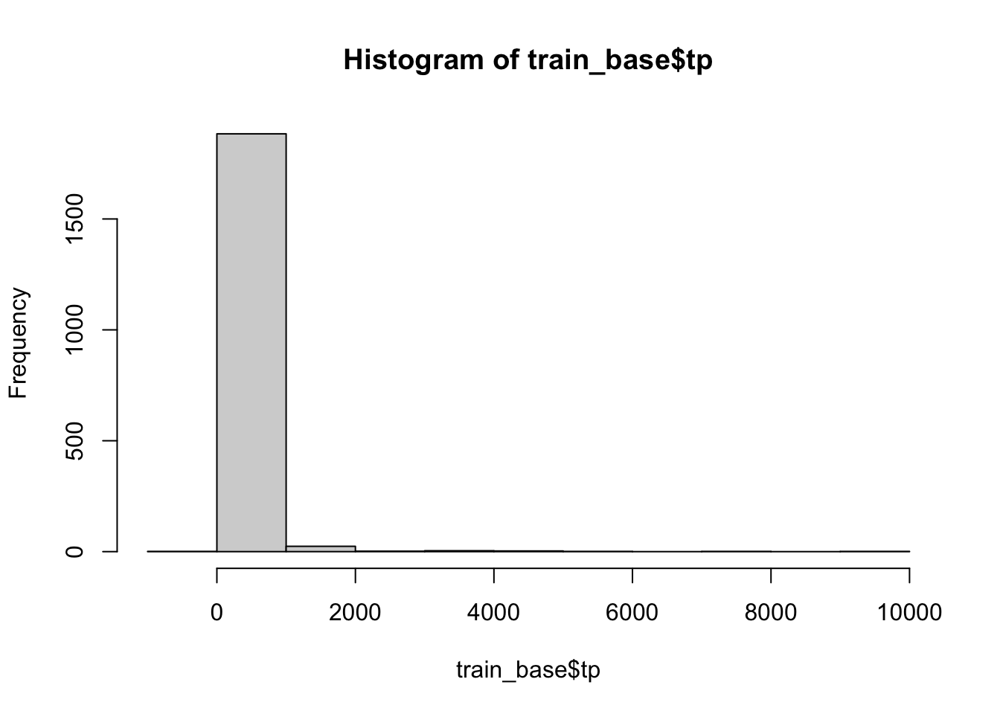
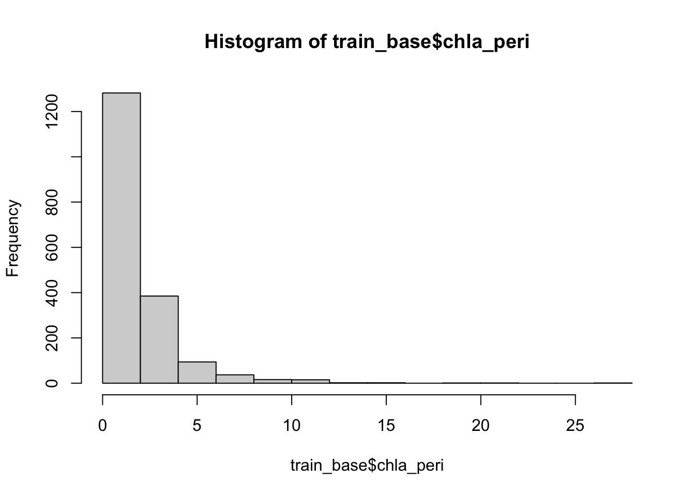
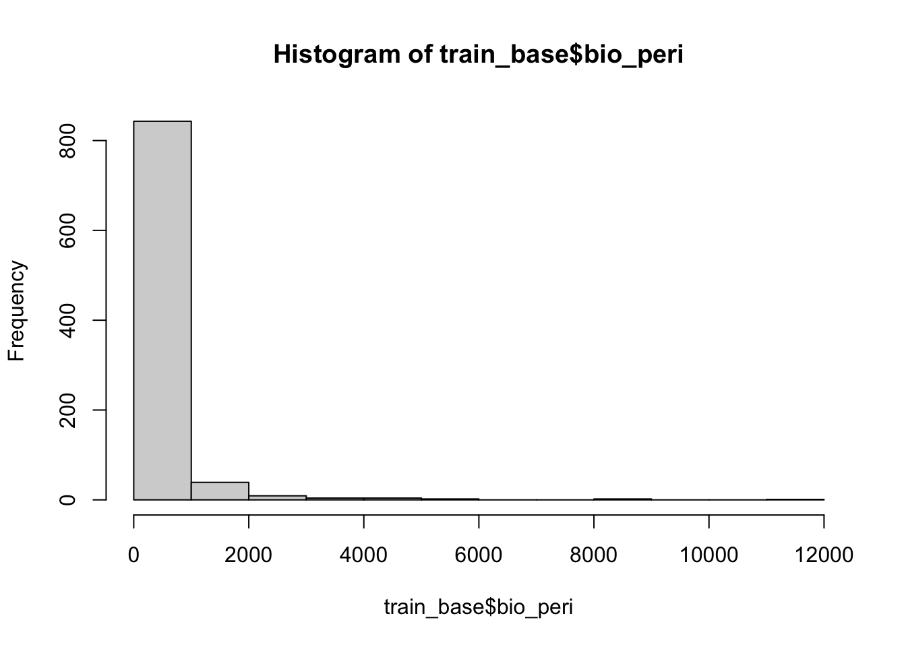
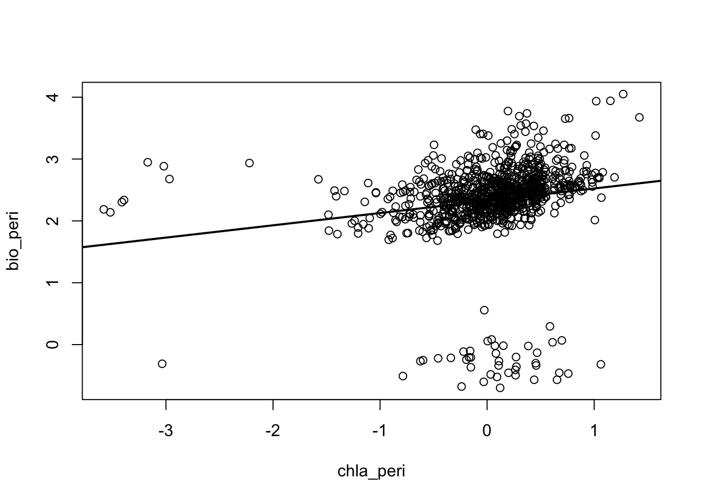
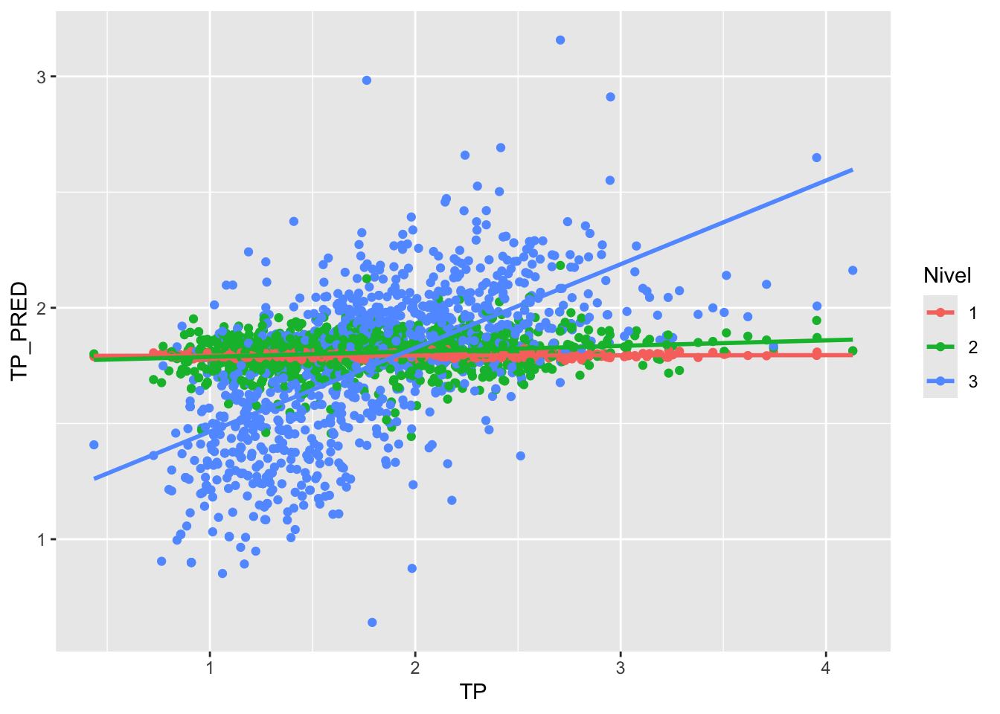
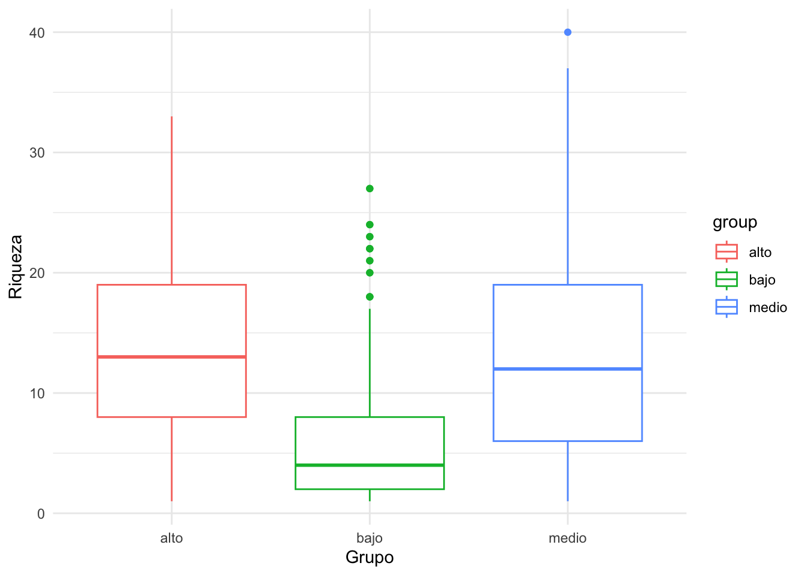
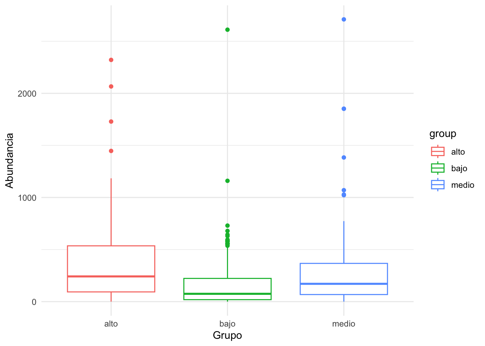
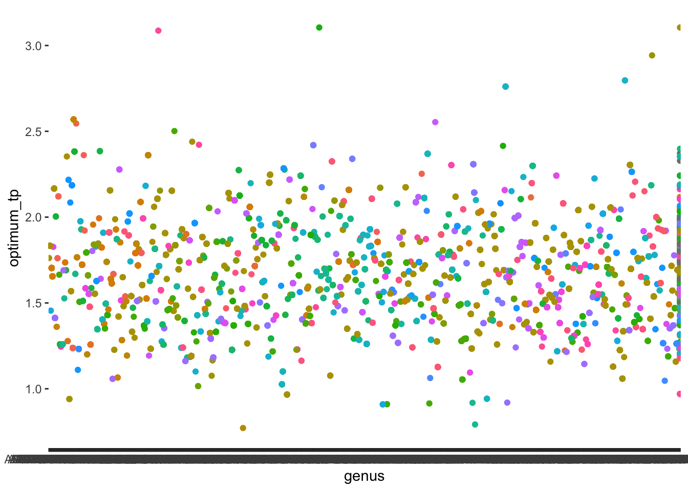
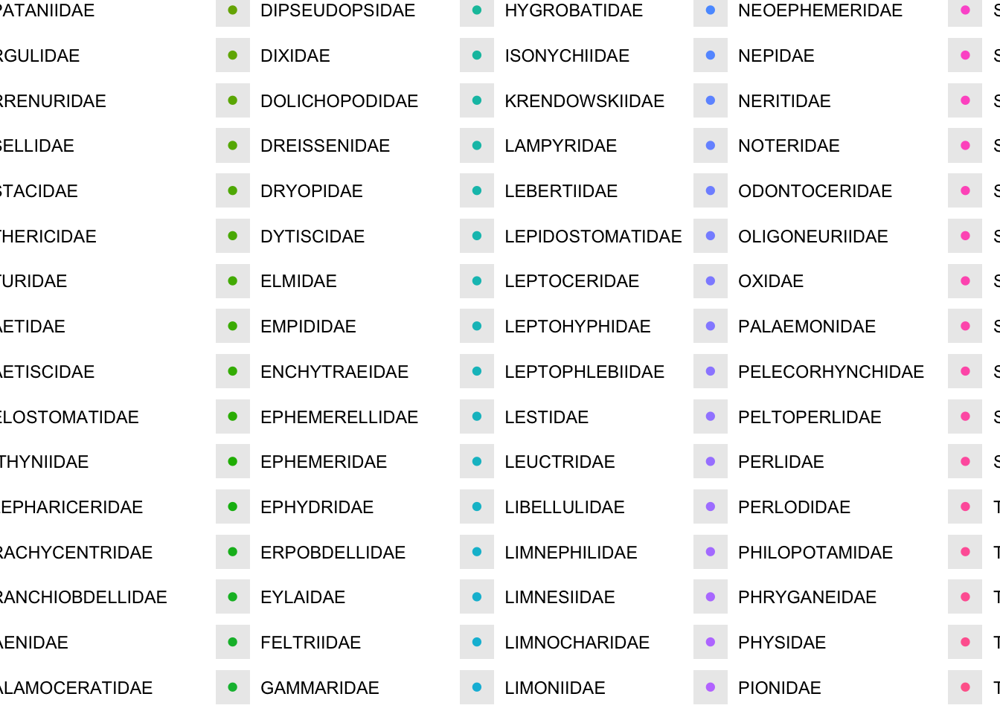
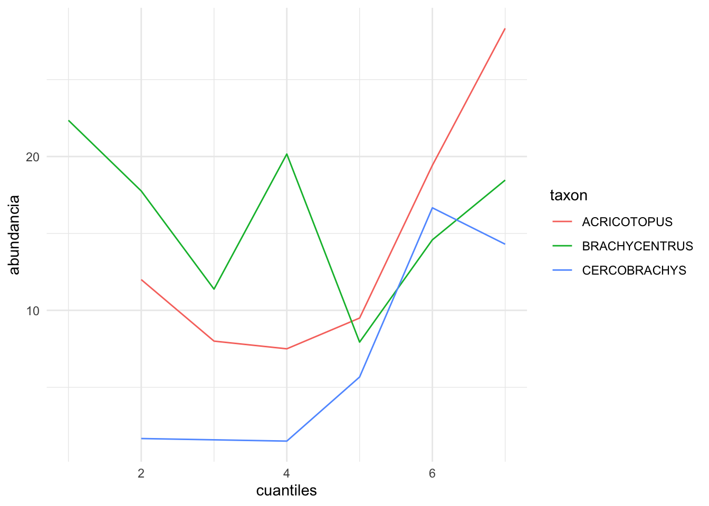

library("readr")
library("dplyr")
library("tidyr")
library("ggplot2")
library("car")
library("knitr")Tarea: indice de nutrientes en rios (NRSA 2018-19 -> 2023-24)
Camila Orlich Ramírez
Objetivo
En esta tarea vas a construir un flujo de modelado por niveles para predecir fosforo total (TP) en rios.
- Entrenamiento: NRSA 2018-2019
- Validacion externa: NRSA 2023-2024
- Regla simplificada: usar solo
VISIT_NO == 1ySAM_CODE == "REGULAR"
La construccion es acumulativa: Ir haciendo uno a uno para ir interpretando poco a poco No queremos que los predictores estén correlacionados entre sí
- Modelo 1: Chl-a -> TP
- Modelo 2: Chl-a + biomasa de perifiton -> TP
- Modelo 3: Chl-a + biomasa + TP inferido por promedio ponderado de invertebrados -> TP
Usamos datos de un año para predecir el fósforo de otros años
Al final, usaras peces para interpretacion ecologica (no como predictor del modelo). Vamos a interpretar la abundancia de peces con los valores predichos de fósforo con el modelo
Recuerda que los surveys no tienen translape entre años, entonces, no podemos predecir los mismos sitios con cuales entrenamos los modelos. Solo se puede entrenar en 2018-19 y validar en 2023-24. Que no hay translape entre encuestas es una ventaja para evaluar la robustez de los modelos. Ver si con los datos de invertebrados del 2024 dan valores de fosforo similares a los reales del 2024.
1. Cargar paquetes
1.1 Funciones utiles para evaluar modelos
No necesitas calcular metricas a mano. Define estas funciones una sola vez y usalas en los niveles 1, 2 y 3.
# Metricas de validacion externa (observado vs predicho)
calc_rmse <- function(obs, pred) {
sqrt(mean((obs - pred)^2, na.rm = TRUE))
}
calc_mae <- function(obs, pred) {
mean(abs(obs - pred), na.rm = TRUE)
}
calc_bias <- function(obs, pred) {
mean(pred - obs, na.rm = TRUE)
}
calc_r2 <- function(obs, pred) {
stats::cor(obs, pred, use = "complete.obs")^2
}
# Esta funcion regresa una fila con todas las metricas
# `data` es un data.frame con columnas de observado y predicho
# `obs_col` y `pred_col` son nombres de columna (string)
# `model_name` es un string para identificar el modelo
model_metrics <- function(data, obs_col, pred_col, model_name) {
dplyr::tibble(
modelo = model_name,
n_test = sum(stats::complete.cases(data[, c(obs_col, pred_col)])),
r2 = calc_r2(data[[obs_col]], data[[pred_col]]),
rmse = calc_rmse(data[[obs_col]], data[[pred_col]]),
mae = calc_mae(data[[obs_col]], data[[pred_col]]),
sesgo = calc_bias(data[[obs_col]], data[[pred_col]])
)
}Proporciona una definicion corta de cada metrica en tu entrega en palabras propias. Trata de interpretar el codigo de las funciones para entender que hace cada metrica. Por ejemplo:
- R2: La correlacion entre observado y predicho, indica que tan bien el modelo explica la variabilidad de los datos.
- RMSE: Para obtener el promedio de las diferencias entre datos predichos y observados sin tomar en cuanta el negativo pero más sensible a los datos extremos que el MAE
- MAE: El promedio de los valores absolutos de las diferencias entre los datos predichos y los observados
- Sesgo: Como el MAE pero toma en cuanta los valores negativos, por lo que se puede saber si en general son mayores los valores predichos o los observados
Tambien puedes extraer informacion del ajuste del modelo (en entrenamiento) con funciones de R base:
# Ejemplo general para un modelo lineal llamado m1
# summary(m1)$r.squared -> R2 en train
# summary(m1)$adj.r.squared -> R2 ajustado en train
# sigma(m1) -> error residual del modelo
# AIC(m1) -> AIC (comparacion entre modelos)
# BIC(m1) -> BIC (comparacion entre modelos)1.2 Log-transformaciones y manejo de ceros
Antes de usar log10, revisa si hay ceros.
- Si una variable tiene solo valores positivos, usa log10 directo.
- Si incluye ceros, usa una de estas estrategias y reportala en tu entrega:
- Filtrar ceros para ese analisis.
- Usar un desplazamiento pequeno: log10(x + c), con c basado en el minimo positivo.
2. Cargar archivos principales
# 2018-2019 (entrenamiento)
chem_1819 <- readr::read_csv("nrsa_1819_water_chemistry_chla_-_data.csv")
pchl_1819 <- readr::read_csv("NRSA_1819_PeriChla.csv")
pbio_1819 <- readr::read_csv("NRSA_1819_pbio_0.csv")
inv_1819 <- readr::read_csv("nrsa_1819_benthic_macroinvertebrate_count_-_data.csv")
fish_1819 <- readr::read_csv("nrsa-1819-fish-count-data.csv")
# 2023-2024 (validacion externa)
chem_2324 <- readr::read_csv("nrsa2324_waterchemistry.csv")
pchl_2324 <- readr::read_csv("nrsa2324_periphytonchlorophyll-a.csv")
pbio_2324 <- readr::read_csv("nrsa2324_periphytonbiomass.csv")
inv_2324 <- readr::read_csv("nrsa2324_benthiccount.csv")
fish_2324 <- readr::read_csv("nrsa2324_fishcount.csv")Chequeo rapido:
dplyr::tibble(
tabla = c("chem_1819", "pchl_1819", "pbio_1819", "inv_1819", "fish_1819",
"chem_2324", "pchl_2324", "pbio_2324", "inv_2324", "fish_2324"),
filas = c(nrow(chem_1819), nrow(pchl_1819), nrow(pbio_1819), nrow(inv_1819), nrow(fish_1819),
nrow(chem_2324), nrow(pchl_2324), nrow(pbio_2324), nrow(inv_2324), nrow(fish_2324))
)# A tibble: 10 × 2
tabla filas
<chr> <int>
1 chem_1819 2112
2 pchl_1819 2112
3 pbio_1819 1038
4 inv_1819 87079
5 fish_1819 22057
6 chem_2324 2172
7 pchl_2324 2130
8 pbio_2324 2130
9 inv_2324 87940
10 fish_2324 199252.1 Punteros de join (importante)
Antes de unir tablas, usa estas reglas:
- No unir 2018-2019 con 2023-2024 fila a fila. Se usan como train y test separados.
- 2018 PeriChla: no confies en
UIDpara unir con quimica. Para esa combinacion, usaSITE_ID + VISIT_NO + DATE_COL. - 2023-2024 PeriChla y PeriBiomasa:
UIDfunciona bien; si hay ambiguedad, usa respaldoSITE_ID + VISIT_NO + DATE_COL. - Antes de cada
left_join, confirma que la tabla de la derecha tiene una sola fila por llave (si no, se duplican filas del modelo).
# Helper para revisar si una llave es unica en una tabla
check_key_uniqueness <- function(data, keys) {
data |>
dplyr::count(dplyr::across(dplyr::all_of(keys)), name = "n") |>
dplyr::filter(n > 1) |>
nrow()
}
# Ejemplo:
check_key_uniqueness(pchl_1819, c("SITE_ID", "VISIT_NO", "DATE_COL"))[1] 0check_key_uniqueness(pchl_1819, c("UID"))[1] 03. Preparar tablas base (solo visita 1 y muestras regulares)
3.1 TP desde quimica
Usa PTL_RESULT como TP en ambas encuestas.
tp_1819 <- chem_1819 |>
dplyr::filter(VISIT_NO == 1, SAM_CODE == "REGULAR") |>
dplyr::transmute(uid = UID, site = SITE_ID, visit = VISIT_NO, date = DATE_COL, tp = PTL_RESULT) #LE AGREGUÉ DATE COL PARA QUE CALZARA CON LA DE PCHL
tp_2324 <- chem_2324 |>
dplyr::filter(VISIT_NO == 1, SAM_CODE == "REGULAR") |>
dplyr::transmute(uid = UID, site = SITE_ID, visit = VISIT_NO, tp = PTL_RESULT)3.2 Chl-a de perifiton
# Tu codigo aqui
# Objetivo: crear pchl_train y pchl_test con columnas: uid, site, visit, chla_peri
pchl_train <- pchl_1819 |>
dplyr::filter(VISIT_NO == 1, SAM_CODE == "REGULAR") |> #PARA QUÉ SE FILTRARON SOLO LOS DE LA PRIMERA VISITA?
dplyr::mutate(site = SITE_ID, visit = VISIT_NO, date = DATE_COL, chla_peri = RESULT, .keep = "none") #CAMBIÉ UID POR DATE COL
pchl_test <- pchl_2324 |>
dplyr::filter(VISIT_NO == 1, SAM_CODE == "REGULAR") |> #PARA QUÉ SE FILTRARON SOLO LOS DE LA PRIMERA VISITA?
dplyr::mutate(uid = UID, site = SITE_ID, visit = VISIT_NO, chla_peri = RESULT, .keep = "none")
# Puntero clave de join:
# - En 2018, para enlazar peri-Chla con quimica usa SITE_ID + VISIT_NO + DATE_COL.
# - En 2023-24, UID suele funcionar bien.
pchl_qu_1819 <- dplyr::left_join(pchl_1819, chem_1819, by= c("SITE_ID", "VISIT_NO", "DATE_COL"))
pchl_qu_2324 <- dplyr::left_join(pchl_2324, chem_2324, by="UID")3.3 Biomasa de perifiton
Filtra ANALYTE == "AFDM" para biomasa seca libre de cenizas.
# Objetivo: crear pbio_train y pbio_test con columnas: uid, site, visit, bio_peri
# Tu codigo aqui
pbio_train <- pbio_1819 |>
dplyr::filter(ANALYTE == "AFDM") |>
dplyr::mutate(uid = UID, site = SITE_ID, visit = VISIT_NO, bio_peri = RESULT_VOL, .keep = "none")
#USÉ EL RESULTADO DE VOLUMEN QUE INDICA LA DENSIDAD DE BIOMASA, ESTÁ CORREGIDA POR UN ÁREA ESPECÍFICA.
pbio_test <- pbio_2324 |>
dplyr::filter(ANALYTE == "AFDM") |>
dplyr::mutate(uid = UID, site = SITE_ID, visit = VISIT_NO, bio_peri = RESULT_VOL, .keep = "none")3.4 Construir tablas de modelado train/test
# Antes de unir: verifica una fila por llave en pchl_* y pbio_* para evitar
# multiplicar filas de train_base/test_base.
check_key_uniqueness(pchl_train, c("site", "date"))[1] 0check_key_uniqueness(pchl_test, c("uid", "site"))[1] 0check_key_uniqueness(pbio_train, c("uid", "site"))[1] 0check_key_uniqueness(pbio_test, c("uid", "site"))[1] 0#NO HAY LLAVES REPETIDAS EN NINGUNA
train_base <- tp_1819 |>
dplyr::left_join(pchl_train, by = c("site", "visit", "date")) |>
dplyr::left_join(pbio_train, by = c("uid", "site", "visit"))
test_base <- tp_2324 |>
dplyr::left_join(pchl_test, by = c("uid", "site", "visit")) |>
dplyr::left_join(pbio_test, by = c("uid", "site", "visit"))4. EDA minima antes de modelar
# Tu codigo aqui
# Sugerencias:
# 1) resumen de NA por variable en train_base y test_base
summarise_all(train_base, ~sum(is.na(.)))# A tibble: 1 × 7
uid site visit date tp chla_peri bio_peri
<int> <int> <int> <int> <int> <int> <int>
1 0 0 0 0 1 86 1018summarise_all(test_base, ~sum(is.na(.)))# A tibble: 1 × 6
uid site visit tp chla_peri bio_peri
<int> <int> <int> <int> <int> <int>
1 0 0 0 2 10 31# 2) histogramas de tp, chla_peri, bio_peri
hist(train_base$tp) #EL MÁX ES 9248
hist(train_base$chla_peri)
hist(train_base$bio_peri)
# 3) decidir transformacion log10 para TP y predictores
#TP TIENE VALORES NEGATIVOS EN TRAIN ENTONCES HAY QUE USAR LOG10(X+C)
#PBIO TIENE VALOR DE CERO
#BUSCAR MÍNIMO POSITIVO:
min(train_base$tp[train_base$tp > 0], na.rm = TRUE)[1] 2.715min(test_base$bio_peri[test_base$bio_peri > 0], na.rm = TRUE)[1] 1.65. Nivel 1: modelo Chl-a -> TP
# Tu codigo aqui
# 1) crear train_m1 y test_m1 con casos completos
# 2) ajustar: log10(tp) ~ log10(chla_peri)
train_m1 <- train_base |>
filter(tp != "NA", chla_peri != "NA") |> #NO FILTRÉ LOS NA DE BIO-PERI TODAVÍA, PARA TENER MÁS N
mutate(log_tp= log10(tp + 2.715)) |>
mutate(log_chla_peri= log10(chla_peri))
m1 <- lm(log_tp ~ log_chla_peri, data = train_m1)
# 3) predecir en test_m1
test_m1 <- test_base |>
filter(tp != "NA", chla_peri != "NA") |>
mutate(log_tp= log10(tp + 2.715)) |>
mutate(log_chla_peri= log10(chla_peri))
test_m1$pred_tp <- predict(m1, newdata = test_m1)
# 4) guardar metricas con model_metrics(...)
m1_metrics <- model_metrics(test_m1, obs_col = "log_tp", pred_col = "pred_tp", model_name = "Nivel 1")
#
# Sugerencia de nombres:
# m1 <- lm(log10(tp) ~ log10(chla_peri), data = train_m1)
# test_m1$pred_logtp_m1 <- predict(m1, newdata = test_m1)
# metricas_m1 <- model_metrics(test_m1, obs_col = "logtp", pred_col = "pred_logtp_m1", model_name = "Nivel 1")
#
# Si creas logtp antes, usa: train_m1 <- mutate(train_m1, logtp = log10(tp))
# y: test_m1 <- mutate(test_m1, logtp = log10(tp))6. Nivel 2: modelo Chl-a + biomasa -> TP
# Tu codigo aqui
# 1) crear train_m2 y test_m2 con casos completos
# 2) ajustar: log10(tp) ~ log10(chla_peri) + log10(bio_peri)
train_m2 <- train_m1 |>
filter(bio_peri != "NA") |>
mutate(log_pbio = log10(bio_peri+1.6))
m2 <- lm(log_tp ~ log_chla_peri + log_pbio, data = train_m2)
#NO TRANSFORMÉ BIO_PERI PORQUE TIENE UNA DISTRIBUCIÓN MÁS NORMAL Y EL MODELO NO ESTABA FUNCIONANDO BIEN CUANDO LO HICE CON EL Log10
# 3) predecir en test_m2
test_m2 <- test_m1 |>
mutate(log_pbio = log10(bio_peri+1.6))
test_m2$pred_tp <- predict(m2, newdata = test_m2)
# 4) guardar metricas con model_metrics(...)
m2_metrics <- model_metrics(test_m2, obs_col = "log_tp", pred_col = "pred_tp", model_name = "Nivel 2")Diagnostico de colinealidad:
# Tu codigo aqui
cor(train_m2$log_chla_peri, train_m2$log_pbio)[1] 0.191605vif(m2)log_chla_peri log_pbio
1.038112 1.038112 plot(train_m2$log_chla_peri, log10(train_m2$bio_peri),
xlab = "chla_peri", ylab = "bio_peri")
abline(
lm(log10(bio_peri) ~ log_chla_peri, data = train_m2),
lwd = 2
)
# Preguntas:
# - chla_peri y bio_peri estan correlacionadas?
#LSegún las pruebas realizadas tanto a las variables con las transformaciones como al modelo (un vif cercano a 1 indica que no hay colinealidad), existe una baja correlación entre ambas variables. Esto a pesar de que existe una estreha relación ecológica entre el perifiton y los organismos fotosintéticos en los lagos.
# - ambas aportan de manera independiente?
#En el modelo ambas aportan de manera independiente7. WA con invertebrados (entrenado en 2018-19)
7.1 Preparar abundancias de invertebrados
Sugerencias:
- usar solo
VISIT_NO == 1 - usar
IS_DISTINCT == 1 - usar
TOTALcomo abundancia - agrupar por taxon objetivo (
TARGET_TAXON)
# Tu codigo aqui
# Objetivo:
# inv_train_long: uid, site, visit, taxon, abundance
# inv_test_long: uid, site, visit, taxon, abundance
inv_train_long <- inv_1819 |>
dplyr::filter(VISIT_NO == 1, IS_DISTINCT ==1) |>
dplyr::mutate(uid = UID, site = SITE_ID, visit = VISIT_NO, taxon = TARGET_TAXON, abundance = TOTAL, .keep="none")
inv_test_long <- inv_2324 |>
dplyr::filter(VISIT_NO == 1, IS_DISTINCT ==1) |>
dplyr::mutate(uid = UID, site = SITE_ID, visit = VISIT_NO, taxon = TARGET_TAXON, abundance = TOTAL, .keep="none")7.2 Calcular optimos de TP por taxon (train)
# Tu codigo aqui
# Formula:
# optimum = sum(log10(tp) * abundance) / sum(abundance)
# Salida esperada: inv_optima (taxon, optimum_logtp)
inv_tp_train <- left_join(inv_train_long, train_base, by= c("uid", "site", "visit")) |>
filter(!is.na(tp)) #PORQUE SINO ME SALE NA EN ESE TAXÓN AUNQUE SOLO TENGA UN DATO DE NA
optimum <- inv_tp_train |>
group_by(taxon) |>
summarise(optimum_tp= sum(log10(tp+2.715)*abundance)/sum(abundance))7.3 Inferir TP por WA en sitios train/test
# Tu codigo aqui
# Salidas esperadas:
# wa_inv_train: uid, site, visit, tp_wa_inv
# wa_inv_test: uid, site, visit, tp_wa_inv
wa_inv_train <- left_join(inv_train_long, optimum, by="taxon") |>
group_by(uid, site) |>
mutate(tp_wa_inv = weighted.mean(optimum_tp, w= abundance)) |>
select(uid, site, visit, tp_wa_inv) |>
distinct()
wa_inv_test <- left_join(inv_test_long, optimum, by="taxon") |>
group_by(uid, site) |>
mutate(tp_wa_inv = weighted.mean(optimum_tp, w= abundance)) |>
select(uid, site, visit, tp_wa_inv) |>
distinct()7.4 Sensibilidad a taxa raros: repetir WA antes/despues de filtrar
Ahora repite el indice WA removiendo taxa raros y compara contra la version original.
# Tu codigo aqui
# Paso A: definir taxa validos en train
taxa_validos <- inv_train_long |>
dplyr::group_by(taxon) |>
dplyr::summarise(
n_sites = dplyr::n_distinct(uid),
total_abundance = sum(abundance, na.rm = TRUE),
.groups = "drop"
) |>
dplyr::filter(n_sites >= 5, total_abundance >= 20)
# Paso B: crear versiones filtradas
inv_train_long_f <- inv_train_long |> dplyr::semi_join(taxa_validos, by = "taxon")
inv_test_long_f <- inv_test_long |> dplyr::semi_join(taxa_validos, by = "taxon")
# Paso C: recalcular optimos y WA por sitio con la version filtrada
# Salidas esperadas:
# wa_inv_train_f: uid, site, visit, tp_wa_inv_f
# wa_inv_test_f: uid, site, visit, tp_wa_inv_f
wa_inv_train_f <- left_join(inv_train_long_f, optimum, by="taxon") |>
group_by(uid, site) |>
mutate(tp_wa_inv_f = weighted.mean(optimum_tp, w= abundance)) |>
select(uid, site, visit, tp_wa_inv_f) |>
distinct()
wa_inv_test_f <- left_join(inv_test_long_f, optimum, by="taxon") |>
group_by(uid, site) |>
mutate(tp_wa_inv_f = weighted.mean(optimum_tp, w= abundance)) |>
select(uid, site, visit, tp_wa_inv_f) |>
distinct()7.5 Comparar WA completo vs WA filtrado y elegir uno
Si el WA pre-filtrado da mejor ajuste en test, usa ese predictor en el modelo final.
# Tu codigo aqui
# 1) construir una tabla de comparacion en test para WA-only
# (mismo y en ambos casos)
#
# Ejemplo de evaluacion con metricas en test:
wa_test_compare <- test_base |>
dplyr::left_join(wa_inv_test, by = c("uid", "site", "visit")) |>
dplyr::left_join(wa_inv_test_f, by = c("uid", "site", "visit")) |>
dplyr::mutate(logtp = log(tp + 2.715))
metricas_wa_all <- model_metrics(wa_test_compare, "logtp", "tp_wa_inv", "WA completo")
metricas_wa_filt <- model_metrics(wa_test_compare, "logtp", "tp_wa_inv_f", "WA filtrado")
dplyr::bind_rows(metricas_wa_all, metricas_wa_filt)# A tibble: 2 × 6
modelo n_test r2 rmse mae sesgo
<chr> <int> <dbl> <dbl> <dbl> <dbl>
1 WA completo 1002 0.353 2.69 2.41 -2.41
2 WA filtrado 1945 0.345 2.62 2.36 -2.35# 2) definir el predictor seleccionado para nivel 3:
#tp_wa_inv_sel = tp_wa_inv_f si WA filtrado mejora (por ejemplo menor RMSE),
#de lo contrario tp_wa_inv.
#EL FILTRADO MUESTRA MENOR RMSE Y MENOR MAE, LO QUE ES MEJOR. PERO EL COMPLETO MUETSRA UN SESGO MÁS LEJANO AL 0 Y UN R2 MÁS ALTO, POR LO QUE ESTÁN MUY PARECIDOS. PERO EN ESTE CASO VOY A USAR EL COMPLETO. 8. Nivel 3: modelo combinado (Chl-a + biomasa + WA invertebrados)
# Tu codigo aqui
# 1) unir wa_inv_train/wa_inv_test y la version filtrada a train_base/test_base
check_key_uniqueness(wa_inv_train, c("uid", "site", "visit", "tp_wa_inv"))[1] 0wa_inv_train_dis <- wa_inv_train |>
filter(tp_wa_inv != "NA") |>
rename(tp_wa_inv_sel = tp_wa_inv)
check_key_uniqueness(wa_inv_test, c("uid", "site", "visit", "tp_wa_inv"))[1] 0# 2) crear tp_wa_inv_sel segun el resultado de 7.5
wa_inv_test_dis <- wa_inv_test |>
filter(tp_wa_inv != "NA") |>
rename(tp_wa_inv_sel = tp_wa_inv)
# 2) crear train_m3 y test_m3 con casos completos
train_m3 <- train_base |>
filter(tp != "NA", chla_peri != "NA", bio_peri != "NA") |>
mutate(log_tp= log10(tp + 2.715)) |>
mutate(log_chla_peri= log10(chla_peri)) |>
mutate(log_bio_peri = log10(bio_peri+1.6)) |>
left_join(wa_inv_train_dis, by= c("uid", "site", "visit"))
test_m3 <- test_base |>
filter(tp != "NA", chla_peri != "NA", bio_peri != "NA") |>
mutate(log_tp= log10(tp + 2.715)) |>
mutate(log_chla_peri= log10(chla_peri)) |>
mutate(log_bio_peri = log10(bio_peri+1.6)) |>
left_join(wa_inv_test_dis, by= c("uid", "site", "visit"))
# 3) ajustar: log10(tp) ~ log10(chla_peri) + log10(bio_peri) + tp_wa_inv_sel
m3 <- lm(log_tp ~ log_chla_peri + bio_peri + tp_wa_inv_sel, data = train_m3)
# 4) predecir en test_m3
test_m3$pred_tp <- predict(m3, newdata = test_m3)
# 5) guardar metricas con model_metrics(...)
m3_metrics <- model_metrics(test_m3, obs_col = "log_tp", pred_col = "pred_tp", model_name = "Nivel 3")9. Comparar desempeno de niveles 1, 2 y 3
# Tu codigo aqui
# Construye una tabla final con:
# modelo, n_test, r2, rmse, mae, sesgo, AIC
m1_metrics$AIC <- AIC(m1)
m2_metrics$AIC <- AIC(m2)
m3_metrics$AIC <- AIC(m3)
desempeño_modelos <- rbind(m1_metrics, m2_metrics, m3_metrics)
desempeño_modelos# A tibble: 3 × 7
modelo n_test r2 rmse mae sesgo AIC
<chr> <int> <dbl> <dbl> <dbl> <dbl> <dbl>
1 Nivel 1 1942 0.00144 0.533 0.430 0.0146 2786.
2 Nivel 2 1918 0.0160 0.529 0.430 0.0336 1293.
3 Nivel 3 983 0.356 0.450 0.348 -0.0306 896.saveRDS(desempeño_modelos,
"desempeño_modelos.rds")# Tu codigo aqui
# Grafico: observado vs predicho por modelo
test_unite <- left_join(test_m1, test_m2, by="site", relationship = "many-to-many") |>
rename(c(TP_1 = log_tp.x, TP_2 = log_tp.y, TP_PRED_1 = pred_tp.x, TP_PRED_2 = pred_tp.y)) |>
select(site, TP_1, TP_2, TP_PRED_1, TP_PRED_2)
test_unite <- left_join(test_unite, test_m3, by="site", relationship = "many-to-many") |>
rename(c(TP_3 = log_tp, TP_PRED_3 = pred_tp)) |>
select(site, TP_1, TP_2, TP_PRED_1, TP_PRED_2, TP_3, TP_PRED_3)
test_clean <- na.omit(test_unite)
test_long <- pivot_longer(
data = test_clean,
cols = matches("^TP(_PRED)?_"), #ESTO ES PARA QUE ME AGARRE AMBAS COLUMNAS: TP Y TP_PRED Y EN NAMES PATTERN USE EL NÚMERO ESAS COLUMNAS Y LO CONVIERTA EN UN VALOR
names_to = c(".value", "Nivel"),
names_pattern = "(TP(?:_PRED)?)_(\\d+)"
)ggplot(test_long) +
geom_point(aes(x=TP, y=TP_PRED, color=Nivel)) +
geom_smooth(aes(x=TP, y=TP_PRED, color = Nivel), method = "lm", se = FALSE)
ggsave("TPvsPRED.png")
#COMO SE OBSERVA, EL MODELO 3 USANDO LA CLOROFILA, EL PERIFITON Y LAS INVERTEBRADOS FUE EL QUE DIÓ MEJOR RESULTADO, TANTO EN EL AIC Y MÉTRICAS DEL MODELO, COMO EN EL GRÁFICO, DONDE EL TP PREDICHO SIGUE UN PATRÓN MÁS SIMILAR AL DEL TP.Discusión: Se realizron diferentes modelos a partir de predictores químicos y biológicos, los cuales se encuentran relacionados entre sí ecológicamente, ya que el perifiton se alimenta de los organismos fotositéticos que contienen clorofila y son alimento para algunos invertebrados. A pesar de esto, no presentaron una correlación en las pruebas realizadas, mostrando así que sí se pueden utilizar conjuntamente como predictores de fósforo total en este caso. Luego de realizar distintos modelos, se encontro que el modelo que integraba los tres predictores era el más efectivo, esto ya que los valores predichos de TP siguen el mismo patrón del TP medido.
10. Capa de interpretacion con peces (no predictor)
Despues de elegir el mejor modelo, usa su TP predicho para explorar patrones de peces en 2023-24.
10.1 Construir metricas de peces por sitio
# Tu codigo aqui
# Sugerencias:
fish_base <- fish_2324 |>
filter(VISIT_NO == 1, !is.na(TOTAL)) |>
mutate(uid = UID, site = SITE_ID, visit = VISIT_NO, date = DATE_COL, especie = FINAL_NAME, abundance = TOTAL, .keep = "none")
fish_tp <- left_join(fish_base, test_m3, by= c("uid", "site")) |>
select(uid, site, especie, abundance, pred_tp) |>
filter(!is.na(pred_tp))
fish_metrics <- fish_tp |>
group_by(site) |>
summarise(riqueza = n_distinct(especie), abundancia_total = sum(abundance), pred_tp) |>
distinct()
# - filtrar VISIT_NO == 1
# - excluir registros sin TOTAL
# - riqueza = numero de especies (FINAL_NAME o TAXA_ID)
# - abundancia_total = suma(TOTAL)10.2 Relacionar peces con TP predicho
# Tu codigo aqui
# 1) unir metricas de peces con TP predicho del mejor modelo
#EN EL PUNTO 10.1
# 2) crear grupos (terciles) de TP predicho: bajo, medio, alto
quantile(fish_metrics$pred_tp, probs = c(1/3, 2/3)) 33.33333% 66.66667%
1.660952 1.915419 min(fish_metrics$pred_tp)[1] 0.6404185max(fish_metrics$pred_tp)[1] 3.157276#BAJOS --> 0.6404 - 1.6609
#MEDIOS --> 1.6609 - 1.9154
#ATOS --> 1.9154 - 3.1572
grouped_fish <- fish_metrics |>
mutate(group = case_when(
pred_tp < 1.660952 ~ "bajo",
pred_tp > 1.915419 ~ "alto",
TRUE ~ "medio"))
grouped_fish$group <- factor(grouped_fish$group)
# 3) comparar riqueza y abundancia entre grupos
comp_groups <- grouped_fish |>
group_by(group) |>
summarise(riqueza = mean(riqueza), abundancia = mean(abundancia_total))
comp_groups# A tibble: 3 × 3
group riqueza abundancia
<fct> <dbl> <dbl>
1 alto 13.3 332.
2 bajo 6.01 160.
3 medio 12.8 261.# Tu codigo aqui
# Graficos sugeridos:
# - boxplot de riqueza por grupo TP predicho
ggplot(grouped_fish, aes(x= group, y=riqueza, color=group)) +
geom_boxplot() +
labs(x = "Grupo", y = "Riqueza") +
theme(legend.position = "none") +
theme_minimal()
ggsave("riqueza_peces.png")
# - boxplot de abundancia por grupo TP predicho
ggplot(grouped_fish, aes(x= group, y=abundancia_total, color=group)) +
geom_boxplot() +
labs(x = "Grupo", y = "Abundancia") +
theme(legend.position = "none") +
theme_minimal()
ggsave("abundancia_peces.png")10.3 Preguntas de interpretacion
¿Aumenta o disminuye la riqueza de peces cuando sube el TP predicho? La riqueza y abundancia aumentan en su promedio, mientras que en la mediana aumenta principalmente la abundancia
¿Hay especies que parecen asociarse a niveles altos de TP predicho?
grouped_fish_tp <- fish_tp |>
mutate(group = case_when(
pred_tp < 1.660952 ~ "bajo",
pred_tp > 1.915419 ~ "alto",
TRUE ~ "medio")) |>
select(group, especie) |>
distinct() |>
add_count(especie) |>
filter(n==1)
grouped_fish_tp |>
count(group)# A tibble: 3 × 2
group n
<chr> <int>
1 alto 55
2 bajo 52
3 medio 97grouped_fish# A tibble: 820 × 5
# Groups: site [813]
site riqueza abundancia_total pred_tp group
<chr> <int> <dbl> <dbl> <fct>
1 NRS23_AL_10003 14 111 1.90 medio
2 NRS23_AL_10012 28 558 1.74 medio
3 NRS23_AL_10021 17 186 1.66 medio
4 NRS23_AL_10024 24 708 1.80 medio
5 NRS23_AL_10025 14 278 2.15 alto
6 NRS23_AL_10031 16 119 1.97 alto
7 NRS23_AL_10051 8 97 1.77 medio
8 NRS23_AL_10067 18 126 1.80 medio
9 NRS23_AL_10072 21 257 1.93 alto
10 NRS23_AL_10091 18 373 2.01 alto
# ℹ 810 more rows#Sí, hay 55 especies que solamente se encuentran en nivles altos de TP, sin embargo, hay muchas más especies en un nivel medio de TP.- ¿Los patrones de peces son consistentes con la interpretacion del modelo quimico-biologico?
summary(m3)
Call:
lm(formula = log_tp ~ log_chla_peri + bio_peri + tp_wa_inv_sel,
data = train_m3)
Residuals:
Min 1Q Median 3Q Max
-1.20108 -0.26696 -0.00799 0.24302 1.58547
Coefficients:
Estimate Std. Error t value Pr(>|t|)
(Intercept) -1.964e+00 1.722e-01 -11.405 < 2e-16 ***
log_chla_peri 1.469e-02 2.494e-02 0.589 0.556146
bio_peri 6.262e-05 1.791e-05 3.496 0.000495 ***
tp_wa_inv_sel 2.123e+00 9.840e-02 21.580 < 2e-16 ***
---
Signif. codes: 0 '***' 0.001 '**' 0.01 '*' 0.05 '.' 0.1 ' ' 1
Residual standard error: 0.398 on 890 degrees of freedom
(2 observations deleted due to missingness)
Multiple R-squared: 0.3837, Adjusted R-squared: 0.3816
F-statistic: 184.7 on 3 and 890 DF, p-value: < 2.2e-16Sí, es consistente, ya que al igual que el TP aumenta cuando los predictores uamneta, es decir, tienen una relación lineal positiva, la diversidad y abundancia de peces aumenta con el TP, y por lo tanto, con los predictores.
Discusión: Se interpretó el índice utilizado para estimar el TP con la información colectada sobre peces, comparando la riqueza y abundancia de los peces con el TP predicho. Esto nos da una idea de cómo se comportan estas métricas con los nivles de TP. Se encontró que tanto la riqueza como la abundancia de los peces aumentaba conforme aumentó el TP predicho, e cual fue estimado usando los predictores químicos y biológicos. Este resultado tiene sentido ya que un aumento en el TP estimado indica también altos niveles de organismos fotosintéticos, perifiton e invertebrados acuáticos, los cuales están relacionados positivamente con la composición y abudancia de peces dadas sus relaciones ecológicas.
11. Interpretacion de invertebrados como taxa indicadores
En esta seccion vas a usar los optimos WA (inv_optima) para explorar potencial de taxa indicadores.
11.1 Optimo por genero (color por familia)
# Tu codigo aqui
# Objetivo:
# 1) construir una tabla por taxon con columnas de taxonomia (al menos GENUS y FAMILY)
# 2) unir con inv_optima
taxones <- inv_1819 |>
dplyr::filter(VISIT_NO == 1, IS_DISTINCT ==1) |>
dplyr::mutate(taxon = TARGET_TAXON, family = FAMILY, genus = GENUS, abundance = TOTAL, .keep="none") |>
select(taxon, family, genus, abundance) |>
left_join(optimum, by= "taxon") |>
distinct()
# 3) graficar optimum_logtp por genero, coloreado por familia
ggplot(taxones, aes(x=genus, y=optimum_tp, color=family)) +
geom_point() +
theme(legend.position = "none")
ggsave("optimos_inv.png")
ggplot(taxones, aes(x=genus, y=optimum_tp, color=family)) +
geom_point() +
theme(legend.position = "bottom")
ggsave("optimos_legend.png")
#
# Sugerencia de salida:
# - eje x: reorder(genero, optimum_logtp)
# - eje y: optimum_logtp
# - color: familia11.2 Taxa con optimo bien definido vs respuesta plana
Selecciona 3-5 taxa y grafica abundancia a lo largo del gradiente de TP (train).
# Tu codigo aqui
# Ideas:
# 1) usar inv_train_long unido con tp_1819 (o logtp)
inv_tp<- left_join(inv_train_long, tp_1819, by= c("uid", "site")) |>
mutate(cuantiles = dplyr::ntile(tp, 7))
# 2) agrupar TP en bins (por ejemplo quintiles)
# 3) calcular abundancia media por taxon x bin
abun_media <- inv_tp |>
group_by(taxon, cuantiles) |>
summarise(abundancia = mean(abundance))
# 4) graficar curvas por taxon
graficar <- abun_media |>
filter(taxon %in% c(
"ACRICOTOPUS",
"CERCOBRACHYS",
"BRACHYCENTRUS"))
ggplot(graficar, aes(x= cuantiles, y=abundancia, color= taxon)) +
geom_line() +
theme_minimal()
ggsave("curvas_inv.png")11.3 Preguntas de interpretacion
- ¿Que generos muestran optimos extremos (muy bajos o muy altos de TP)? Acricotopus y Cercobrachys aumentan su abundancia conforme hay más TP, mientras que Brachycentrus se mantiene en una abundancia similar aunque se obsera una ligera tendecia a disminuir su abundancia conforme se aumenta el TP.
- ¿Que familias concentran taxa con optimos similares?
taxones_2 <- taxones |>
group_by(family) |>
summarise(optimo = mean(optimum_tp), desvest = sd(optimum_tp)) |>
arrange(optimo)Dentro de la familia Chironimidae, la mayoría de los géneros tienen un valor óptimo similar. Pero entre familias, un ejemplo es el Ephemeroptero Ameletidae y el anélido Sabellidae, con un puntaje alto; mientras que el efemerótero AMETROPODIDAE con el hemíptero PLEIDAE.
¿Que taxa parecen tener un optimo bien definido y cuales una respuesta mas plana? Noteridae tiene poca distribución dispersa de los optimos, al igual que Polymitarcydae. Mientras que Hydraenidae y Piscicolidae tienen una respuesta más plana.
¿Cuales propondrías como potenciales indicadores y por que? Los que tienen una respuesta más clara, es decir con un optimo más definido como Polymitarcydae, Noteridae y Limnocharidae, ya que de esta manera me están indicando la concentración de TP con mayor seguridad.
Discusión: En esta estapa se pudo relacionar la composición de taxones de invertebrados acuáticos en lagos con el óptimo de TP en el que se pueden encontrar. Debido a la diversidad de hñabitos alimenticios y adaptaciones fisiológicas de los invertebrados, distintas especies toleran rangos ditintos de fósforo en el agua, lo que permite que se generen composiciones únicas en cada lago, dependiendo de las condiciones químicas de estos. Estos rangos óptimos permiten relacionar taxones de invertebrados con los niveles de fósforo en el agua y de esta manera monitorear el estado de eutrofización del lago.
12. Entregables
- QMD con todo el flujo reproducible. Toman en cuenta donde estan los archivos de datos y no asumen que estan en el mismo directorio que el QMD. Pueden restructurar los datos y codigo en subcarpetas or organizar como les sirve a ustedes, siempre que sea reproducible y que se puede entender y ejecutar. Idealmente, comparten el codigo con los datos como una carpeta comprimida (zip) o un repositorio de GitHub, asi puedo ejecutar el flujo completo y obtener los resultados.
- Tabla comparativa de desempeno de modelos (niveles 1, 2, 3).
- Grafico observado vs predicho por modelo.
- Dos graficos de interpretacion de peces.
- Dos graficos de interpretacion de invertebrados (optimos y curvas de abundancia).
- Discusion corta (5-10 lineas por seccion).